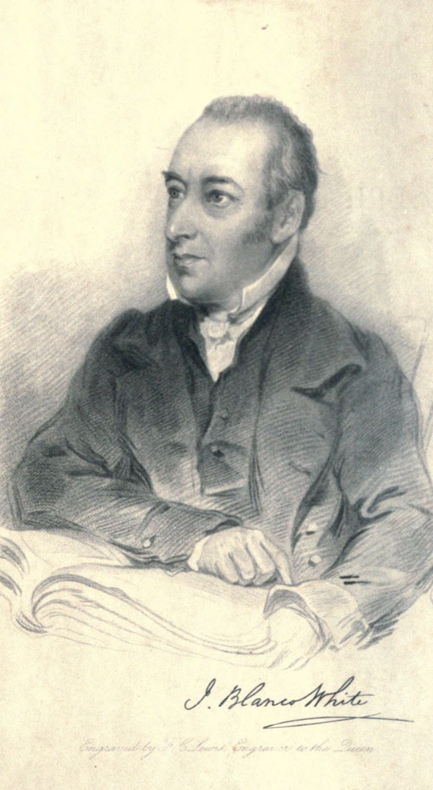
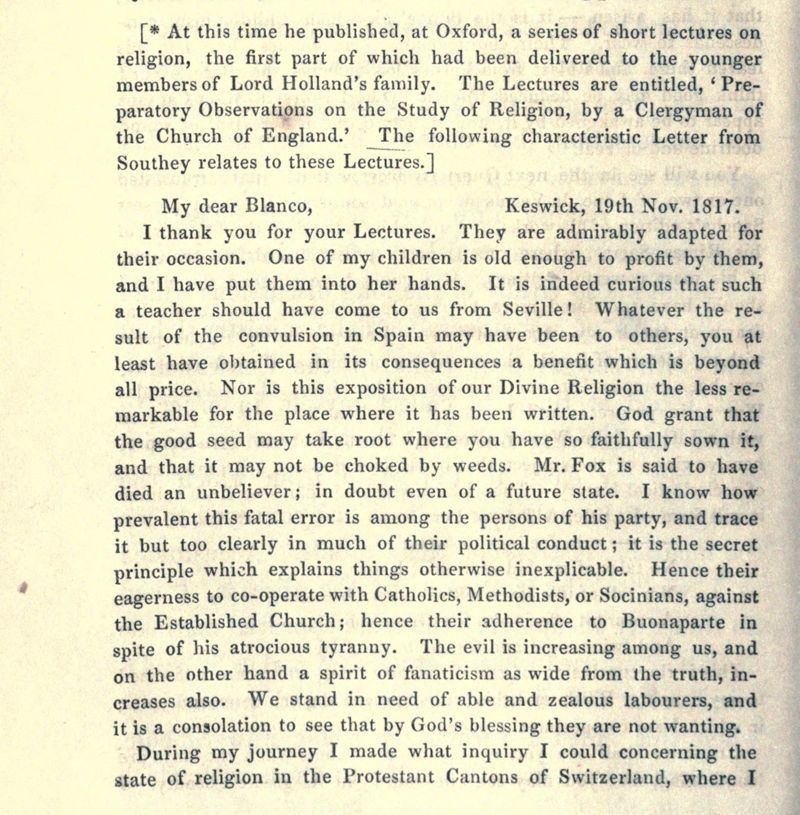

Southey to Blanco White, Keswick, 19 November 1817 (vol. I, p. 310)
English: 1845, vol. I p. 310, scan n337; printed as a footnote to Blanco White’s “Sketch of his Mind in England”. Highlighted: the passage Lecky has in mind.

[* At this time he published, at Oxford, a series of short lectures on religion, the first part of which had been delivered to the younger members of Lord Holland’s family. … The following characteristic Letter from Southey relates to these Lectures.]
My dear Blanco, Keswick, 19th Nov. 1817.
I thank you for your Lectures. They are admirably adapted for their occasion. One of my children is old enough to profit by them, and I have put them into her hands. It is indeed curious that such a teacher should have come to us from Seville! … God grant that the good seed may take root where you have so faithfully sown it, and that it may not be choked by weeds. Mr. Fox is said to have died an unbeliever; in doubt even of a future state. I know how prevalent this fatal error is among the persons of his party, and trace it but too clearly in much of their political conduct; it is the secret principle which explains things otherwise inexplicable. Hence their eagerness to co-operate with Catholics, Methodists, or Socinians, against the Established Church; hence their adherence to Buonaparte in spite of his atrocious tyranny. The evil is increasing among us, and on the other hand a spirit of fanaticism as wide from the truth, increases also. We stand in need of able and zealous labourers, and it is a consolation to see that by God’s blessing they are not wanting.
During my journey I made what inquiry I could concerning the state of religion in the Protestant Cantons of Switzerland …
Lecky (vol. II, ch. V, text at note 23): “the Whig party, which had constituted itself the representative of the secular movement, and which contained an unusually large proportion of religious latitudinarians”. Southey, a Tory and a fierce critic of the Whigs, is a hostile witness, and his “is said” marks the story of Fox’s deathbed as hearsay. Lecky’s “striking” is fair; his source is a partisan.
Further down the rabbit hole
Sources that Lecky cites in the notes next to the ones that cite this page.
- Buckle, History of Civilization in EnglandWeather and credulity, and the Scottish clergy’s Devil who had been studying for five thousand years
- Gladstone, The State in its Relations with the ChurchThe future Liberal prime minister’s defence of a Church-and-State Toryism
- An Homily against Disobedience and Wilful RebellionHell as the prison of rebels: the Church of England preaches obedience
- Aquinas, Summa theologiae, II-IIHeretics and forgers; the usurper’s subjects
- Ayala, De jure et officiis bellicisAnyone may kill a usurper, not a lawful prince
- Barrington, Observations on the More Ancient StatutesHenry VIII’s 72,000 hangings, and why English thieves had “better hearts”


Backlinks
Every place in Rationalism in Europe that links to this page (generated automatically when the site is built).
- Chapter V: note 23